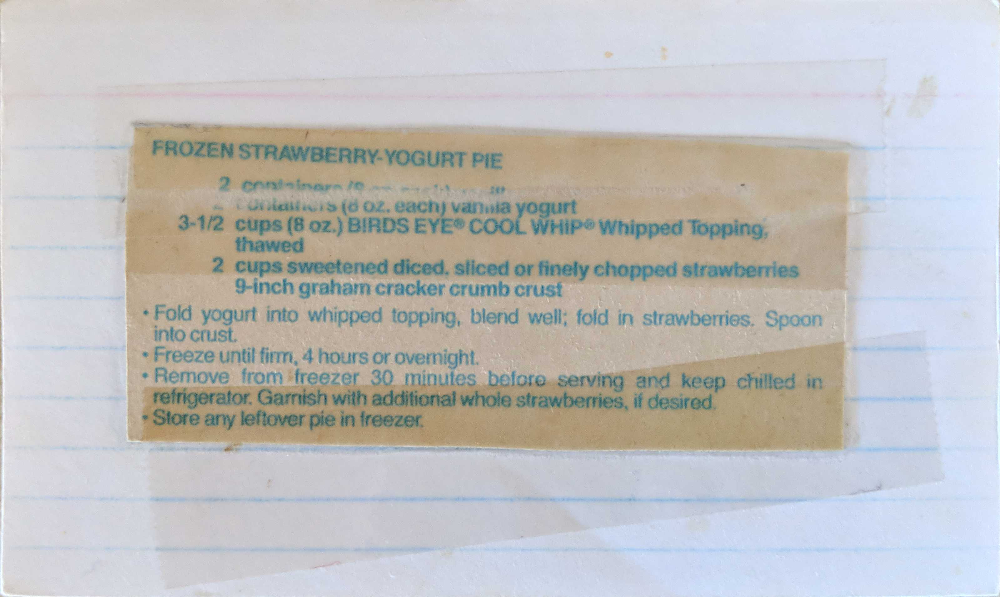

Frozen Strawberry-Yogurt Pie
2 containers (8 oz. each) vanilla yogurt
3-1/2 cups (8 oz.) BIRDS EYE COOL WHIP Whipped Topping, thawed
2 cups sweetened diced, sliced or finely chopped strawberries
9-inch graham cracker crumb crust
- Fold yogurt into whipped topping, blend well; fold in strawberries. Spoon into crust.
- Freeze until firm, 4 hours or overnight.
- Remove from freezer 30 minutes before serving and keep chilled in refrigerator. Garnish with additional whole strawberries, if desired.
- Store any leftover pie in freezer.